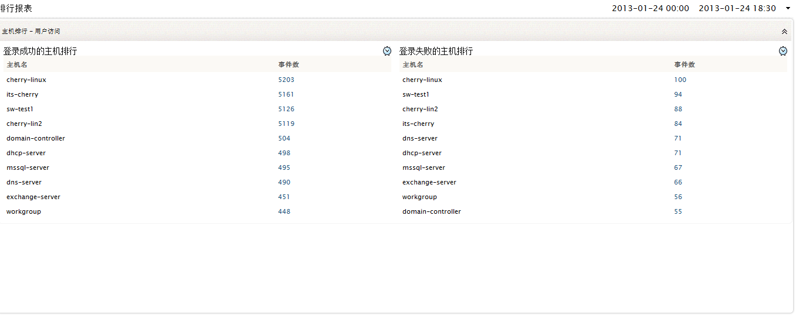
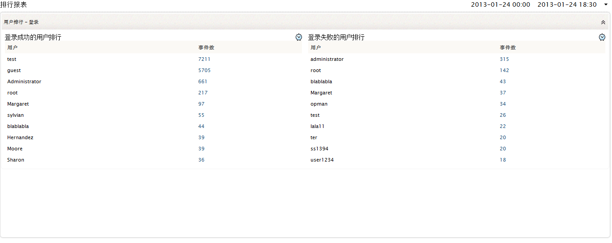
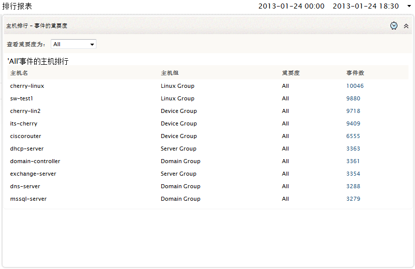
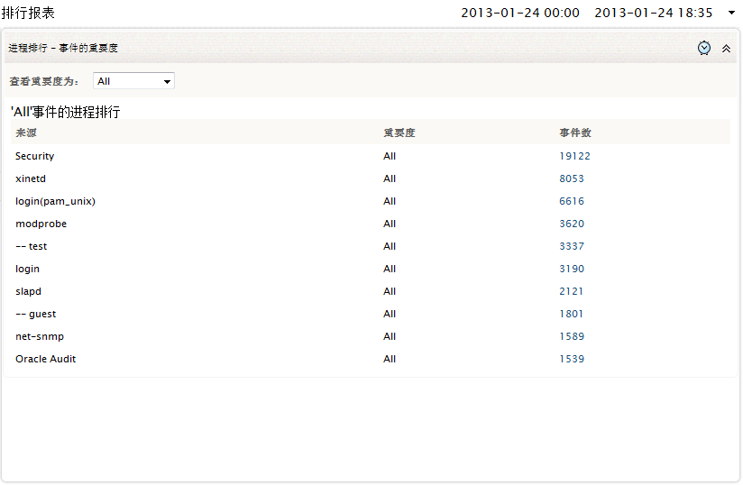

查看主机排行报表
要查看主机排行报表，可通过以下菜单实现：
在报表页面下的排行报表部分，包含了主机排行、用户排行、按事件重要度的进程排行等。您可以点击查看全部链接，查看此部分的所有报表。
主机排行 - 用户访问
这个报表显示了按用户登录成功或失败的主机排行。

前者对于追踪主机的使用趋势非常有用，而后者则可用于分析主机的安全需求。
您可以使用这些报表，来决定是否针对某些主机，更改安全策略，或提高网络安全措施。
用户排行 - 登录
这个报表显示了按用户登录成功或失败的用户排行。

这个报表可以告诉您，哪些用户使用密码登录到哪些主机的状态，是成功的或是失败的。如果一个用户使用用户名、密码访问了多个主机，那么这个报表将显示出他使用过哪些主机，以及使用的时间。如果用户尝试多次登录，但都是失败的，那么这个报表将显示此用户失败登录的次数，以及所使用的主机，操作的时间。
您可以使用这个报表来识别您网络中的临时用户，并设置策略追踪这些用户。
交互登录排行
在这里，交互登录仅仅通过用户界面完成。
此报表显示成功登陆次数最多的用户，及登录尝试失败次数最多的用户。这个报表将告诉您哪个用户登录了哪台主机，以及是否登录成功。

如果一个用户使用用户名、密码访问了多个主机，那么这个报表将显示出他使用过哪些主机，以及使用的时间。如果用户尝试多次登录，但都是失败的，那么这个报表将显示此用户失败登录的次数，以及所使用的主机，操作的时间。
您可以使用这个报表来识别您网络中的临时用户，并设置策略追踪这些用户。
主机排行 - 事件的重要度
此报表根据重要度显示主机的排行，并显示所有事件。这就是说，您可以一眼看出主机的关键事件，告警事件，等等。默认情况下，查看重要度的值设置为全部，任何重要度的事件都会被显示出来。

您可以使用这个报表快速识别哪些主机出现了常见的问题，并快速进行故障排除。
 |
说明：某些事件重要度仅适用于Unix主机。 |
进程排行 - 事件的重要度
此报表按照运行在所有主机的进程排列事件日志，并显示每个重要度的最高值。您一眼就能够看出主机生成的关键事件，告警事件等等。默认情况下，查看重要度的值设置为全部，任意重要度的事件都会被显示。

使用这个报表，您就可以对关键主机进行调查是否存在可疑的行为，确定在网络中是否存在蠕虫或者病毒攻击，您也可以看到哪些主机受影响，从而减少网络的受影响事件。
|